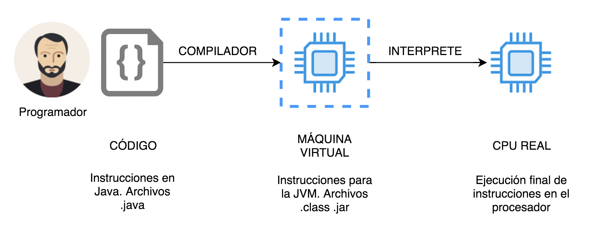

EL LENGUAJE DE PROGRAMACIÓN JAVA
CONTENIDO
1. ¿Qué es Java?2. Filosofía y características de Java
3. Historia de Java
4. Funcionamiento de Java
1. ¿Qué es Java?
Java es un lenguaje de programación muy utilizado en todo el mundo especialmente para aplicaciones web y de categoría empresarial. Como Lenguaje de Programación Java permite el desarrollo de software para diferentes tipos de aplicaciones, incluyendo aplicaciones web, aplicaciones empresariales, aplicaciones de escritorio, aplicaciones cliente servidor, aplicaciones para dispositivos móviles y aplicaciones para dispositivos de electrónica de consumo como neveras o televisores. Este gran conjunto de posibilidades hace de Java un lenguaje con mucho alcance, además de mantenerse en constante actualización lo cual le permite incorporar las mejores técnicas de programación y evolucionar a la par que lo hace la tecnología.
2. Filosofía y características de Java
Java ha sido diseñado con varias características en mente, entre ellas se pueden encontrar las siguientes:
- Orientación a objetos: el lenguaje Java desde su nacimiento ha sido Orientado a Objetos y en ese sentido incorpora en sus pilares constructivos todos los conceptos de este paradigma de programación, así mismo Java dispone de algunas características nativas que no incluyen objetos, concretamente los tipos nativos que permiten mayor eficiencia cuando el programador lo requiera.
- Portabilidad: quizás esta sea una de las características más relevantes e importantes de Java y de hecho también es una de las características con la que el lenguaje nació. La portabilidad le permite a Java que los programas desarrollados en este lenguaje puedan ejecutarse en cualquier plataforma sin necesidad de volver a compilar el código, y este hecho no es algo trivial, ha permitido a Java acoplarse exitosamente al mundo de Internet donde concurren una gran cantidad de dispositivos, arquitecturas de computadores y sistemas operativos, esto le abrió paso rápidamente en sus inicios y lo convirtió en uno de los lenguajes más populares del mundo. Este concepto es conocido como WORA (Write Once, Run Anywhere).
- Simple: ser un lenguaje ampliamente utilizado no se logra si no se cuenta con una sencillez y simplicidad que le permita a las personas programar en el lenguaje. Java adoptó los paradigmas más exitosos de programación orientada a objetos y adicionalmente eliminó algunas de las complejidades que hacían que programar en otros lenguajes fuera difícil, específicamente Java eliminó la herencia múltiple y automatizó la liberación de la memoria, este último caso dificultaba especialmente la programación puesto que si la labor de eliminar la memoria manualmente es responsabilidad del programador, es común que se elimine objetos de la memoria en el momento inadecuado, es decir, cuando todavía se necesitan.
- Gran cantidad de librerías: al existir una comunidad tan grande de programadores (del orden de millones) hay muchos aportes, y en terminos de programación eso significa disponer de mucho código desarrollado y agrupado en librerías para realizar todo tipo de tareas, además estas librerías por lo general son abiertas o gratuitas.
- Moderno y futurista: Java recibe constantemente actualizaciones, estas actualizaciones normalmente amplían el lenguaje e incluyen características importantes y que facilitan las operaciones, lo anterior es importante debido a que facilita al programador una mayor capacidad de expresión de manera que con menos código se puede hacer más, haciéndolo más simple y más fácil de mantener.
- Maduro: Java nació en 1996 luego de más de dos décadas de desarrollo y a la fecha después de una gran cantidad de actualizaciones (algunas menores y otras más significativas) Java ha logrado durante este tiempo una madurez y una estabilidad que lo hace apto incluso para aplicaciones empresariales de misión crítica.
- Fuertemente tipado: esta característica de Java es quizás una de las dificultades de los programadores que inician con el lenguaje, pero una vez dominado este concepto el programador encontrará que es un beneficio muy grande ya que evita errores en tiempo de ejecución. También sucede que algunos programadores acostumbrados a lenguajes con un tipado débil como Visual Basic o JavaScript encuentran retador trabajar en Java. De cualquiera manera el programador que inicia en Java rápidamente se acostumbra a trabajar con los tipos de forma obligatoria.
3. Historia de Java
Java comenzó como un proyecto en 1991 desarrollado de la compañía Sun Microsystems, el proyecto a cargo de James Gosling se llamo originalmente Oak, sin embargo este nombre ya estaba registrado como marca, por lo cual se optó por el nombre Green debido al nombre del proyecto principal donde se desarrollaba y finalmente paso a denominarse Java. El origen del nombre de lenguaje Java no esta claro a que se debe y una de las teorías más aceptadas es que se le puso este nombre debido a un tipo de café que se vendía cerca de las oficinas del proyecto. De aquí, el hecho que uno de los iconos más representativos de Java es una taza de café.

Java nació con la idea de escribir una sola vez y ejecutar en cualquier lugar, este principio, como ya se ha indicado, se conoció como WORA (Write Once, Run Anywhere) un hecho que es reforzado en el pilar de la portabilidad. Java entonces se oriento desde su nacimiento a la Web, en ese entonces era el año de 1994 y la Web aun era muy incipiente, sin embargo los visionarios de Java hicieron una versión de navegador Web propia y soportada por Java, para 1995 se podía descargar HotJava y casi que paralelamente uno de los navegadores más populares del momento, Netscape, incorporaba soporte nativo para Java. En esa época, Java se ejecutaba como pequeñas aplicaciones dentro de las páginas web que se llamaban applets, y para entonces las páginas web contenían casi que exclusivamente texto e imágenes, la posibilidad de incorporar contenido dinámico ejecutado en el navegador (cliente) fue toda una revolución ya que abría la puerta a un sin fin de aplicaciones, de hecho, incluso en las empresas se comenzó a dar un paso de sistemas cliente - servidor a sistemas cliente - servidor pero habilitados en la web (Web Enabled). Java tenía entonces todo el camino y potencial para desarrollarse y así fue.
De allí en adelante, y luego del primer lanzamiento de la versión de Java JDK 1.0 en 1996 seguirían una serie de evoluciones de las cuales algunas de las más relevantes incluye la versión JDK 1.4 en 2002, JDK 5 en 2004 y la versión JDK 8 en 2014. Cada nueva versión incorpora una adición importante de paquetes a la librería estándar de Java y una extensión de capacidades del lenguaje.
Hoy en día Sun Microsystems fue adquirida por el gigante tecnológico Oracle y en esta operación fue absorbido Java, para fortuna de los desarrolladores Oracle abrió el código fuente de Java convirtiendo el núcleo del lenguaje en OpenSource, ello derivó que algunas otras compañías construyeran sus propias versiones de Java, de manera que se encuentran implementaciones de Java de Oracle, de IBM y de algunas iniciativas del mundo OpenSource, entre otras.
4. Funcionamiento de Java
El funcionamiento de Java se basa en el hecho que exista una máquina virtual, esto es indispensable para lograr la portabilidad, a su vez el hecho de tener un lenguaje que se interpreta en una máquina virtual en lugar de hacerlo directamente en el procesador (como ocurría con C/C++) ocasionaba que los programas inicialmente desarrollados en Java no fueran tan rápidos. Este hecho ha sido mejorado con el tiempo y hoy por hoy el desempeño de la máquina virtual de Java es reconocido como un punto fuerte en lugar de una debilidad.
Un programa en Java funciona entonces con la codificación en un archivo de texto cuya extensión es .java este archivo es compilado a un lenguaje denominado bytecode y el resultado de dicha compilación es un archivo .class este último archivo es susceptible de ser ejecutado por la máquina virtual que a su vez es ejecutada por el procesador real. Se preguntará entonces para que usar una máquina virtual en lugar de ejecutar directamente en el procesador real, y la respuesta subyace en la característica de Java de la portabilidad que permite ejecutar el código en cualquier arquitectura o sistema operativo, note que esto es posible gracias a que el bytecodes es ejecutado por la máquina virtual y que existen diferentes máquinas virtuales adaptadas a cada sistema operativo o arquitectura de computadora, pero aunque existan varias máquinas virtuales todas ellas son capaces de ejecutar el mismo bytecode, allí radica el éxito de la portabilidad de Java.
A continuación se proporciona algunas de las definiciones más importantes que debe tener en cuenta a la hora de comprender como funciona Java
- JVM: Esta sigla hace referencia a la Java Virtual Machine, es e software encargado de ejecutar las instrucciones en bytecodes en el procesador real.
- JRE: Java Runtime Enviroment es el componente de Java que contiene la JVM y demás utilidades y permite ejecutar programas en Java. Toda persona que desee correr programas hechos en Java debe disponer de una versión del JRE instalada en su computador.
- JDK: Java Development Kit es un conjunto de componentes de software que incluyen el JRE y además los ejecutables necesarios para desarrollar y depurar código.
Veamos lo anterior en un poco más de detalle y haciendo referencia a la Figura 2. La imagen clarifica como se da el proceso de codificación y ejecución de un programa en Java y para leerla debemos comenzar por la izquierda donde se muestra el código fuente, este código es el que produce un programador y lo hace adhiriéndose a la sintaxis de Java. el código no es más que un conjunto de archivos .java agrupados en diferentes carpetas. A continuación, dicho código es compilado (traducido) al lenguaje denominado bytecodes que puede entender la JVM y ésta es la encargada de ejecutar las instrucciones (en un proceso de interpretación) en la máquina o procesador físico real. En la imagen también se puede esclarecer el porque de diferentes versiones de la JVM una por cada sistema operativo y arquitectura de máquina real, su código y en general siempre funcionará en la JVM quedando independiente de la máquina real logrando así el propósito de Java de la portabilidad.

Los componentes principales para desarrollar y que están incluidos en el JDK incluyen los ejecutables java para ejecutar archivos .class o .jar y otras utilidades como javac que realiza la compilación de java a bytecodes, estas son las dos utilidades principales del JDK pero no son las únicas existen muchas otras que ayudan a depurar y encontrar errores entre otras.
Una claridad importante en el proceso de compilación y ejecución de Java y que he dejado por alto es la diferencia existente entre los archivos .class y .jar y la diferencia realmente es muy simple, siendo el primer tipo de archivo el resultado de la compilación de un solo archivo de Java a bytecodes y el segundo tipo, es decir, el .jar es un archivo especial que contiene al interior muchos .class. Lo más normal en un programa Java es que existan muchos archivos Java y por lo tanto resulten del proceso de compilación muchos archivos .class por lo tanto lo más habitual es tener empaquetados todos esos archivos en un solo .jar. De hecho las librerías construidas con finalidades especificas son distribuidas en formato .jar.